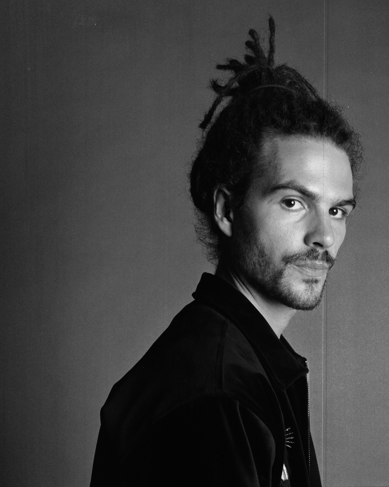
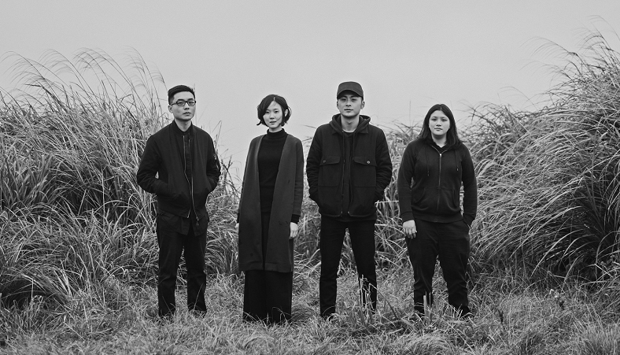
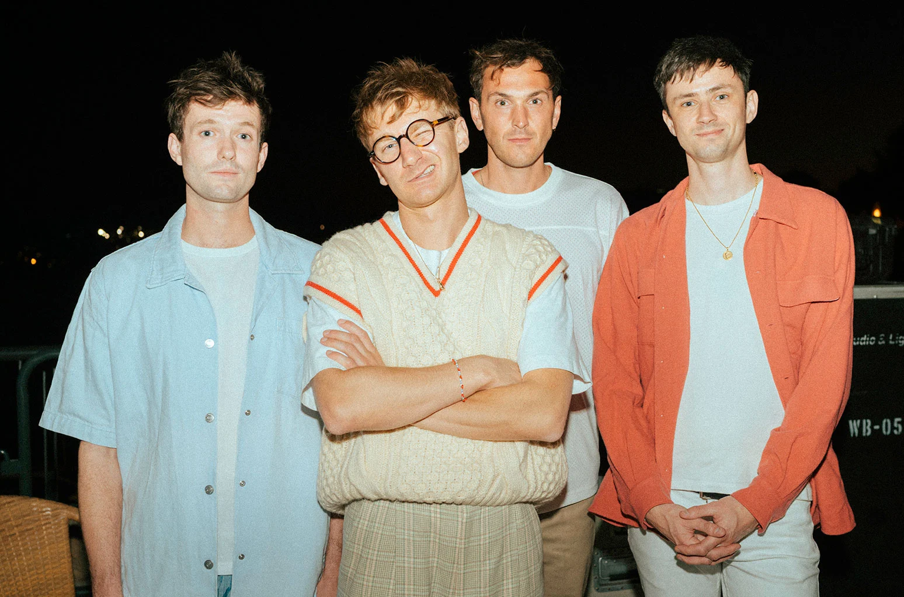
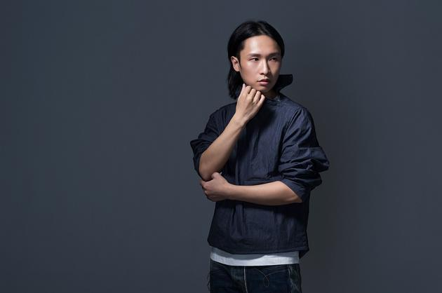
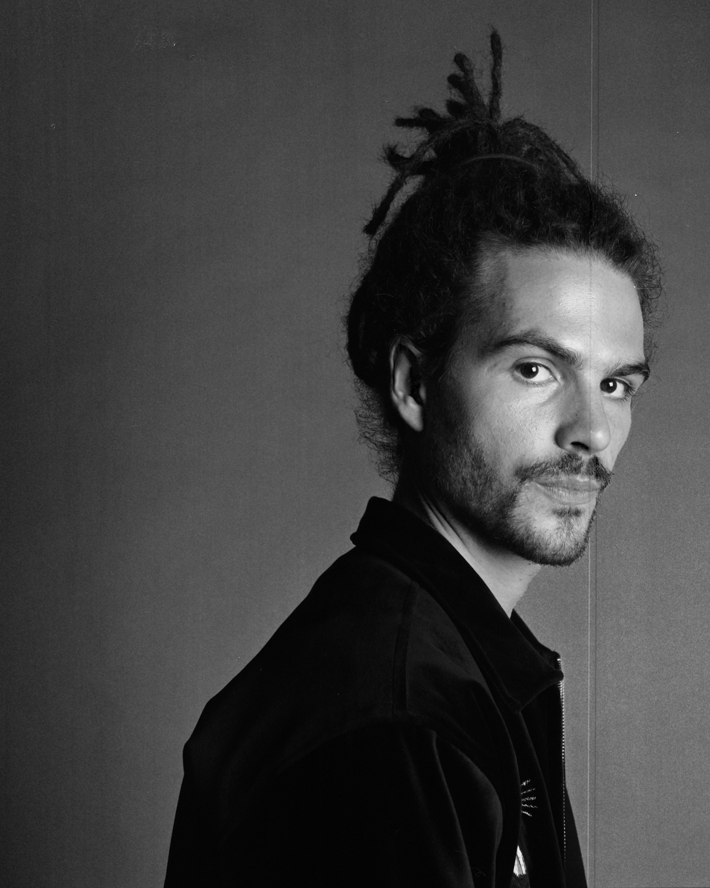
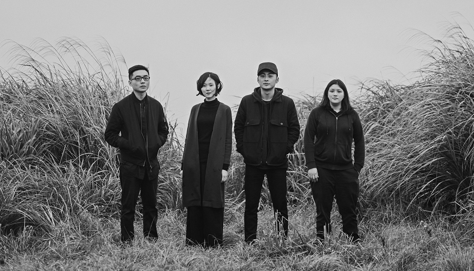
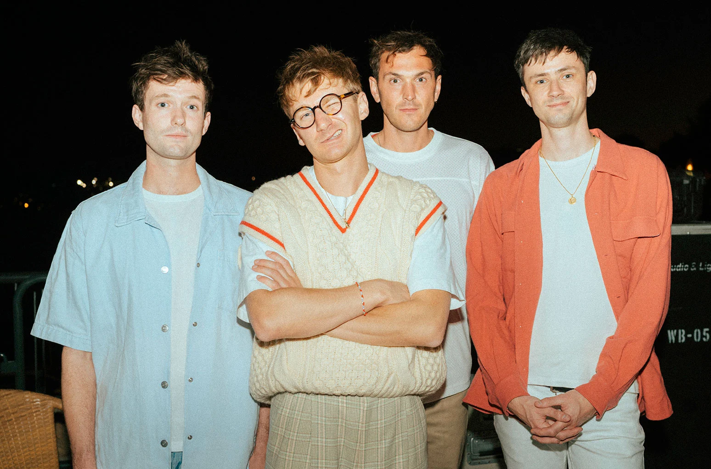
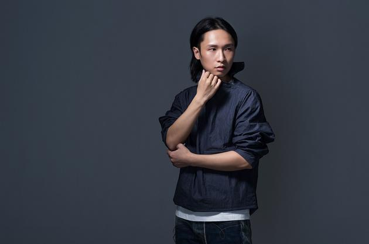

Marilyn's Top Picks
 







Guo Ding 郭顶
Guo Ding is a talented song-writer, singer born in Hunan,China. He said during an interview that: "I believe that music functions like a painting. If the listeners can imagine images while listening to a song, the song would be very successful." His belief was well illustrated in his song, whenever I listen to his song I feel myself standing in the scene he tries to convey in his song. His latest Album Silent Star Stone 飛行器的執行週期 was my favorite albumn of all time.
Lauv (Ari Staprans Leff)
Ari Staprans Leff (born August 8, 1994), known professionally as Lauv (/laʊv/[5]), is an American singer and songwriter, best known for his breakout hit "I Like Me Better"; included on his compilation album I Met You When I Was 18 (The Playlist), which was released in 2018. My favorite song includes "I Like Me Better", "Invisible Things" and "Paris in the Rain".
French Kiwi Juice (FKJ)
Vincent Fenton, known professionally as French Kiwi Juice or the abbreviation FKJ, is a French multi-instrumentalist, singer, and musician from the city of Tours. He is known for his solo live performances, where he does live loopings through Ableton Live and showcases his multi-instrumentalist skills. His Ylang Ylang Live Session is a must!!!
No Party For Caodong 草动没有派对
No Party For Cao Dong (Chinese: 草東沒有派對) is an indie rock band from Taiwan currently consisting of Wood Lin (vocals and guitar), Judy Chan (guitar), Sam Yang (bass), and Huang Shih-wei (drums). The first song I listened to is Wayfarer 山海 , which caught my attention immediately when the drum beats came in.
Glass Animals
Glass Animals are an English indie rock band formed in Oxford in 2010. The band's line-up consists of Dave Bayley (vocals, guitar, keyboards, drums, songwriting), Drew MacFarlane (guitar, keyboards, backing vocals), Edmund Irwin-Singer (bass, keyboards, backing vocals), and Joe Seaward (drums). The album DreamLand has helped me went through the most stressful time during my application season. My favorite song includes Domestic Bliss, Heat Wave and Tokyo Drifting.